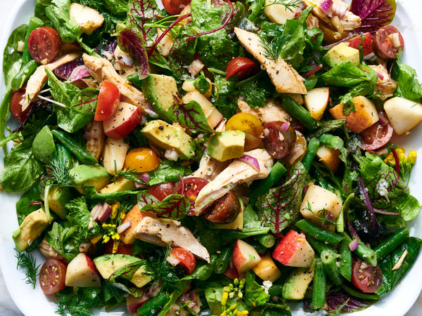

Overwhelmingly Savory Balsamic Dressing
This is a dressing recipe I learned from my mother many years ago.
Eventually I was forbidden from making it as it got to be too strong for my stepmom, however I love a strong dressing that only requires a slight drizzle to completely alter a salad.
It is also great to add to sandwiches for a zesty kick!
Ingredients
- Balsamic Vinegar
- Rice Wine Vinegar
- Dijon, Stone Ground, or Whole Grain Mustard
- Garlic
- Olive Oil
How it Do
- Add to jar 3 parts Balsamic and 2 parts Rice Wine vinegar
- Salt and Pepper to taste (adding the seasoning before the oil allows it to better dissolve)
- Add 1 part mustard
- Crush the garlic into the mixture using a garlic press.
I like mine pretty garlicky and will use at least 4 large cloves for approximately 300 ml of dressing.
- Seal the jar and give it a good shake, until the contents are a consistent brown
- Add about 4 parts olive oil (up to 50% the total, though you can use less if you like it stronger)
- Shake well before each use, as the oil will separate from the rest
Voila! You have the tastiest and most versatile dressing ever! And it's not to bad on the health front, so enjoy it how you will. Just be sure not to drown your food in it...
...